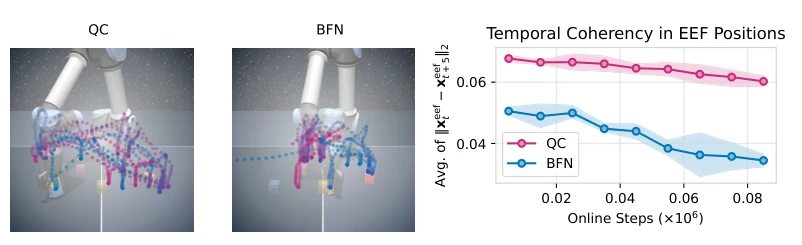
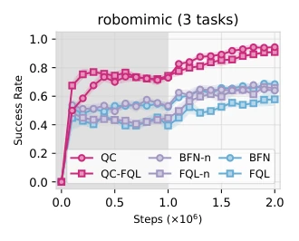
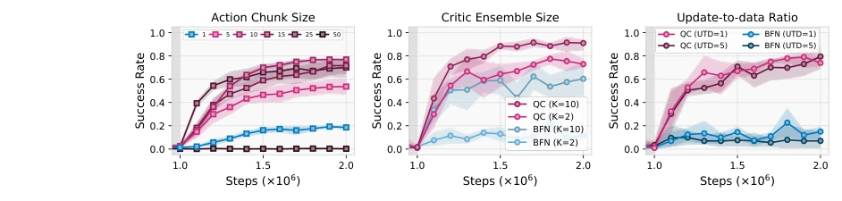
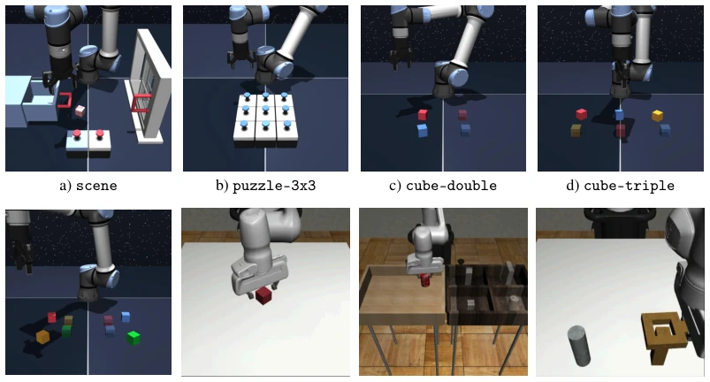
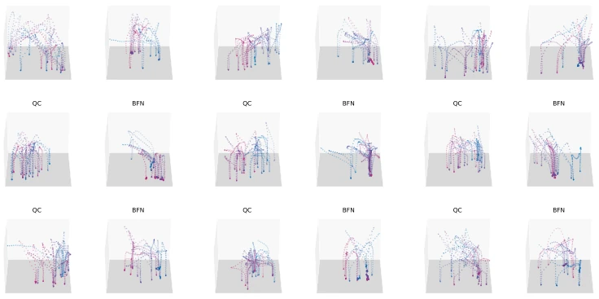
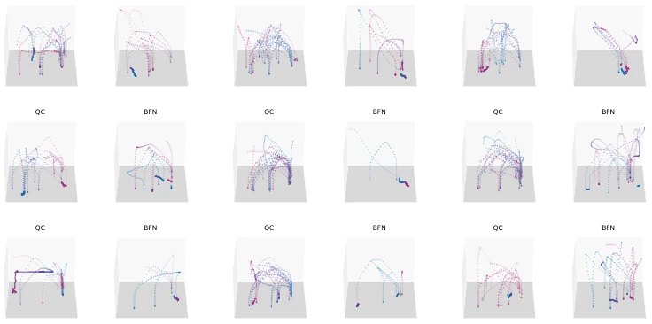

Figure 2: Naïvely using action chunking for online RL with Gaussian policies leads to poor performance. (1) RLPD runs online RL on both offline data and online replay buffer [7]. (2) RLPD-AC is the same algorithm as RLPD but operates in a temporally extended action space (action chunk size of 5). (3) QC-RLPD additionally uses a behavior cloning loss on the actor (4 seeds).
Figure 1: Q-chunking uses action chunking to enable fast value backups and effective exploration with temporally coherent actions. left: an overview of our approach: Q-chunking operates in a temporally extended action space that allows for (1) efficient value backups and (2) effective exploration via temporally coherent actions; right: Our method (QC) first pre-trains on an offline dataset for 1M steps (grey) and then updates with online data for another 1M steps (white). Our method achieves strong aggregated performance over five challenging long-horizon sparse-reward domains in OGBench. Code: github.com/ColinQiyangLi/qc
Figure 3: Robomimic results. QC achieves strong performance across all three robomimic tasks. The first 1M steps are offline and the next 1M steps are online with one environment step per training step (5 seeds).

Figure 5: End-effector movements early in the training and temporal coherency analysis on cube-triple-task3. Left: QC covers a more diverse set of states compared to BFN in the first 1000 environ- ment steps. Right: QC exhibits a higher temporal coherency in end-effector compared to BFN.

Figure 4: n-step return ablations on robomimic. Both Q-chunking methods con- sistently outperform their n-step and 1-step TD counterparts (5 seeds).

Figure 6: Sensitivity analysis: action chunk size (h), critic ensemble size (K), and update-to-data ratio (UTD). Left: QC-FQL with different h on all 5 cube-triple tasks (5 seeds). QC-FQL with h = 1 is equivalent to FQL. Center: Increasing the ensemble size to K = 10 improves performance of both QC and BFN on cube-triple-task3 (5 seeds). Right: QC with UTD of 5 on cube-triple-task3 (5 seeds). We report only the online phase results, as all methods achieve near-zero success rates during the offline phase.
其他图片Other Figures

Figure 7: We experiment on several challenging long-horizon, sparse-reward domains. See detailed task description for each domain in Appendix B. The rendered images of the robomimic tasks above are taken from Mandlekar et al. [43].

Figure 8: End-effector trajectory early in the training. Each subplot above shows the trajectory for a consecutive of 1000 time steps. We include up to Step 9000.

Figure 9: End-effector trajectory visualization late in the training. Each subplot above shows the trajectory for a consecutive of 1000 time steps (from Step 900000 to Step 909000).